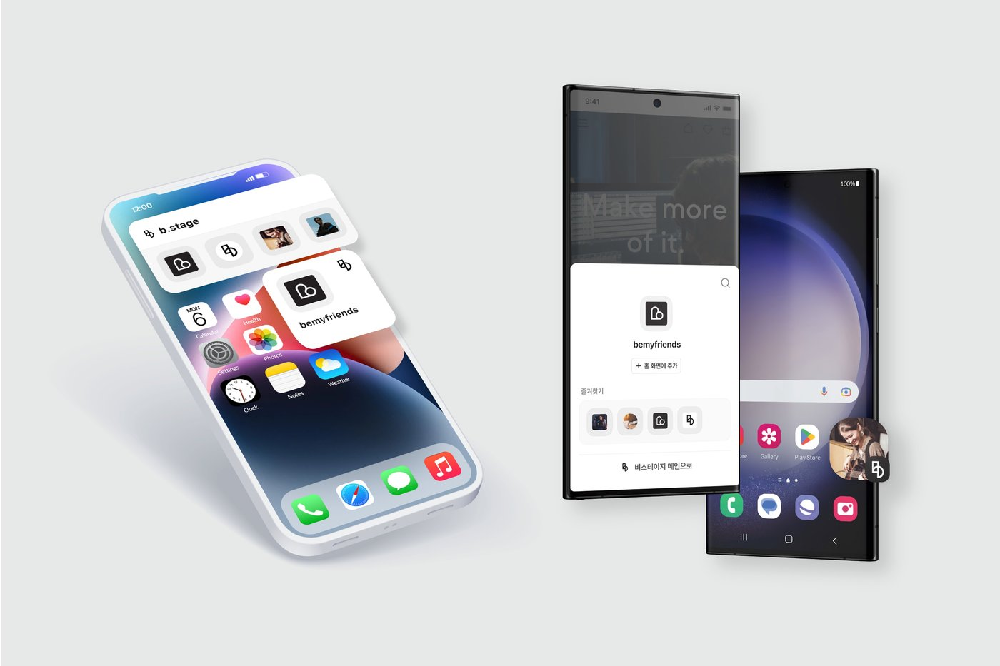

b.stage 用了半年才踩明白的四个坑——偶像舞台 App 的防翻车清单
b.stage 看着就是一个追偶像的舞台 App，装上去就能用。但真正深度用下来，桌面快捷方式突然失效、商店预订退不了款、通知石沉大海这些坑，我一个都没躲过。这篇把踩过的四个坑和解法一次性说清。
刚用 b.stage官网 的时候觉得特别简单——装 App、加书签、追偶像的 stage，三步完事。结果用了不到一个月，先后栽了好几个跟头：桌面小组件突然没内容了、预订的会员礼盒想取消取消不了、Live 开播提醒一条都没收到。最惨的一次是以为 App 彻底坏了差点卸载重装，最后才发现是电池优化把后台推送给掐了。
把这几个坑挨个捋一遍，都是实打实踩过的，不是编的。
坑一：安卓装完没通知，以为 App 坏了
症状：装完 b.stage，权限全点了允许，结果偶像的 Live 开播一条通知都没收到。等了三天才在 App 里看到回放，直播早就结束了。
原因：国内安卓手机大多没有 Google 服务框架，系统的电池优化会把 b.stage 的后台推送当成耗电大户直接杀掉。我当时用的是小米，默认对非系统应用的后台活动卡得特别严。
解法：两步搞定。第一步，装完之后立刻去系统设置里找到「电池优化」，把 b.stage 设为「不限制」或「无限制」。第二步，如果你是用 APK 装的，确认安装包来源可靠——Google Play 版和 APK 版功能一样，但有些第三方渠道的 APK 可能被精简过推送模块。我自己用的手机没 Google Play，是从 b.stage下载 拿的安装包，放开电池优化之后通知就正常了。
坑二：桌面快捷方式/小组件突然空了
症状：之前好好的桌面快捷方式，点进去提示找不到 stage；iPhone 上的 2x2 小组件也变成了空白图标，连名字都不显示。
原因：桌面快捷方式和小组件都依赖 App 内部的书签数据。我那次的问题是 b.stage 更新了 3.0 大版本，更新过程中书签数据被重置了一部分，快捷方式指向的书签 id 失效了。还有一种常见情况是手动清理了 App 数据缓存，书签一起被清掉了。
解法：先打开 App 看书签列表还在不在。如果书签还在，删除桌面图标重新添加一次就行——安卓点 stage 左上角菜单选「添加到主屏幕」，iPhone 长按桌面空白处搜 b.stage 重新加小组件。如果书签也没了，那就是缓存被清了，得重新搜偶像的 stage 加书签，没别的办法。

坑三：商店预订了想取消，取消不了
症状：在 b.stage 商店订了一个会员礼盒，后来发现预算超了想取消订单。点订单详情里的取消按钮要么没反应，要么提示「已进入生产周期」。
原因：b.stage 的商店规则里，预订（Pre-order）商品一般不支持取消——下单之后运营方就按订单量启动生产了，你取消等于人家白忙活。我当时没仔细看商品页的标签，那个礼盒明明标了「预订」，我以为是现货下单。还有签售会名额、视频通话场次这类活动类商品，本质是活动门票，更是付了钱就退不了。
解法：下单前养成三个检查习惯。一看商品标签有没有「预订」「限时」「会员专属」这些标识；二看商品详情页的发货周期说明；三有疑问直接翻 b.stage文档 里的退款规则章节——那里对哪些能退、哪些不能退写得清清楚楚。已经踩了坑想抢救的，可以联系运营方的客服碰碰运气，但别抱太大希望，规则就是规则。
坑四：以为自己被平台拉黑了，其实是 App 版本太旧
症状：某天打开 b.stage，页面一直转圈加载不出来，换了 Wi-Fi 和移动数据都不行。同时间朋友的手机上正常打开，我以为自己账号被封了。
原因：b.stage 的服务器端接口更新了，旧版本 App 还在用老接口协议，直接被服务器拒了。我那个版本停在 2.9，最新已经到 3.1 了，中间跳了好几个版本。国内没有 Google Play 的设备不会自动推送更新，很容易积年累月跟不上版本。
解法：去拿最新的 APK 覆盖安装就行——数据和登录状态不会丢，APK 方式是原地升级。装完之后清理一下应用缓存，重启 App，立刻恢复正常。后来养成了习惯，每隔一个月去看一眼有没有新版本，省得突然断更。
防坑清单
- 安卓装完第一时间去电池优化里放行 b.stage，通知收不到十有八九是这个问题
- 预订商品下单前必须看清标签，标了「预订」的默认不能取消，别冲动
- 桌面快捷方式失效先查书签有没有丢，App 更新后指向会变，重新添加一次就好
- 没 Google Play 的设备每隔一段时间手动查一下新版本，服务器接口一变旧版直接打不开
- 拿 APK 只从可靠渠道，别装来路不明的，不仅可能被精简推送，还担心安全问题
其实 b.stage 本身做的不算差，坑大多藏在「国内安卓环境」和「商店规则」这两块。注意了上面这几条，日常用下来还是挺省心的，偶像的 Live 和周边都不会错过。这份踩坑笔记整理的时候顺带同步到了三个备份仓库：GitHub 放原始文档，Gitee 和 GitCode 主要方便国内访问，内容都是同步的。